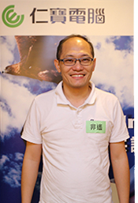

蛻變！螞蟻雄兵
戰地記者：非遙 James
|  | 卓越團隊仁寶黃埔31期弟兄們在22日一大早就集結在仁寶總部門口，咦~怎麼還缺一員？原來是身負重裝備的戰地記者James還沒到！真拍謝啦~ 讓所有弟兄多等待了5分鐘。不囉嗦，卓越團隊重裝部隊立馬出發，向陽明山上的天籟主戰場集結。 這兩天的總指揮官Roger老師，真不愧是老薑一塊兒~ 對於我們這群自信滿滿的猛虎，自有一套收服我們的撇步~體驗式的team building活動課程，起承轉合，一直圍繞著團隊&夥伴的主軸發展下去。每個不同的小戰場都是一再地讓我們深刻體認到團隊合作的重要性，經歷了連續兩日戰火的摧殘，兩天前的每每獨自稱王的猛虎們，已變成螞蟻雄兵般的團結戰力！ 「感謝Roger老師，感謝副總，讓我們真正成為仁寶人！」 |